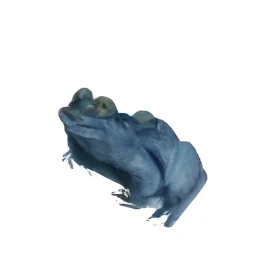
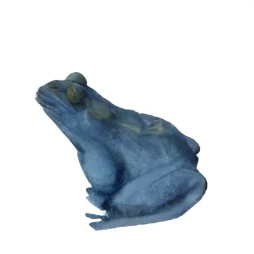

01 / SELECTED RESEARCH


02 / RESEARCH INTERESTS
Learning representations of the world that are useful for prediction, planning and decision-making.
Generalization, policy reliability and learning to act in unfamiliar environments.
Learning and improving generative models of images and videos.
03 / BACKGROUND
ML Research Engineer
Generative modeling, distributed training and robot learning research.
M.Sc. in Machine Learning
B.Sc. in Applied Mathematics and Computer Science